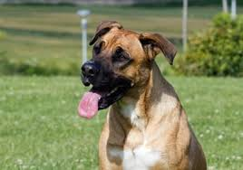
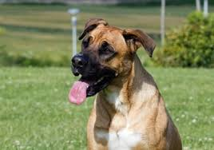

ADOPTA Y SALVA
Asociación Animalista 4Patas
Desafortunadamente sigue siendo habitual que algunos propietarios que compran un cachorro de forma impulsiva decidan abandonarlo o dejarlo en una protectora de perros cuando se dan cuenta de que convivir con él implica un compromiso importante que puede superar los 10 años, en términos de dedicación, paciencia y reestructuración de la rutina o estilo de vida adquirido. España es el país europeo con mayor tasa de abandonos, llegando esta cifra a los 300.000 abandonos anuales.
Con la acción de adoptar no solo estás solucionando un gran problema social, sino que también estás frenando una acción ruin, la de poner precio a vidas.
¿Quiénes somos?
Somos un refugio dedicados no solo a rescatar vidas, sino también a la gestión y orientación de las adopciones. Nos encargamos de difundir y crear campañas de consciencia para toda la sociedad a nivel nacional
Creamos cursos de adiestramiento canino y ayudantes de veterinarios, también ofrecemos diferentes salidas a nuestros refugiados y orientamos a las personas que quieren ayudar.
¿Puedo adoptar?
Antes de realizar una adopción queremos ponernos en contacto contigo, saber tus objetivos, deseos y expectativas a la hora de tener una mascota en tu hogar. Por ello te recomendamos hablar con nuestros orientadores una vez hayas realizado (y contestado honestamente) las siguientes preguntas:
- ¿Para qué quiero una mascota?
- ¿Tengo dinero para afrontarlo?
- ¿Tengo tiempo y espacio?
- ¿Quiero ampliar la familia?
- ¿Soy tolerante a los pelos?
- ¿Tengo espiritu de sacrificio?
En nuestra asociación queremos conocerte para ofrecerte las mejores alternativas, cada persona es un mundo y cada animal también. En base a tu estilo de vida y carácter trataremos de guiarte hacia las opciones más adecuadas.
¡No tengas miedo y pregúntanos!
Entrevista Un proyecto animalista en crecimiento:
En adopción
 

Otras formas de ayudar
Apadrina
No siempre se tiene la posibilidad de tener un animal en casa. A veces, por problemas de espacio o por no disponer de tiempo suficiente, es imposible tener un animal de compañía en nuestro hogar. En estos casos, ofrecemos la posibilidad de apadrinar uno de nuestros perros o gatos. Tu nombre figurará en la ficha del animal que aparece en nuestra web y podrás venir a verlo solicitando cita previa (de lunes a viernes de 10 a 17:30h y los fines de semana y festivos de 9:00 a 11:00h). Si apadrinas a un perro, puedes venir a pasearlo por los alrededores del refugio. Y si apadrinas un gato, estará encantado de que vengas a hacerle compañía.
Voluntariado
En la Liga necesitamos personas con ganas de ayudar, ya sea paseando perros, acariciando gatos, repartiendo comidas, limpiando las instalaciones o poniendo lavadoras. Pero no siempre hay plazas libres. En esta página informaremos periódicamente de las necesidades que vayan surgiendo para cubrir turnos de voluntariado de perros o gatos. Asimismo, recuerda que no solo hay voluntarios en el refugio. Siempre precisamos gente con habilidades que nos ayuden en la actividad diaria de la protectora: periodistas, informáticos, diseñadores, artesanos, comerciales, abogados, fotógrafos, publicistas... Hay muchos profesionales que nos pueden ayudar a crecer y a dar a conocer nuestra labor. Si tú eres uno de ellos y estás dispuesto a comprometerte, te queremos conocer.
Enlaces de interés
Actividades
Cuerpo Nacional
En nuestro centro se encuentran perros con aptitudes para el rastreo y una alta obediencia, por ello si presentan diferentes características se donan al cuerpo nacional.
PPP
También ofrecemos la posibilidad de obtener la licencia para Perros Potencialmente Peligrosos (test, pruebas, acreditación homologada y por un coste muy inferior a otros departamentos)
Residencias
Todos los viernes a las 17h se realizan excursiones a diferentes residencias de mayores, ya que ambos grupos necesitan dar amor y recibirlo. Es una práctica que llevamos implantando (y ayudando a implantar a otros centros) desde 2010, con resultados muy provechosos para todos.
Cursos
En nuestro centro se ofrecen dos cursos, el de adiestrador canino y el de ayudante de veterinario, ya que a parte de beneficiarnos económicamente también nos ayudáis a mantener y gestionar el centro. Tu formación será de calidad y estarás contribuyendo a una buena causa
Localízanos
Dirección
Camí de Son Reus, s/n
07120 Palma (Illes Balears)
Datos de contacto:
Teléfono: 971438695
Fax: 971438864
Correo electrónico: centreproteccioanimal@palma.cat